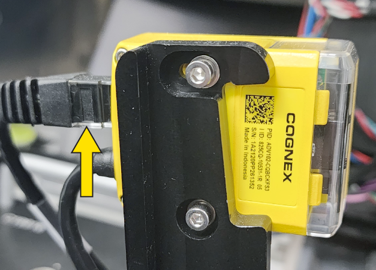
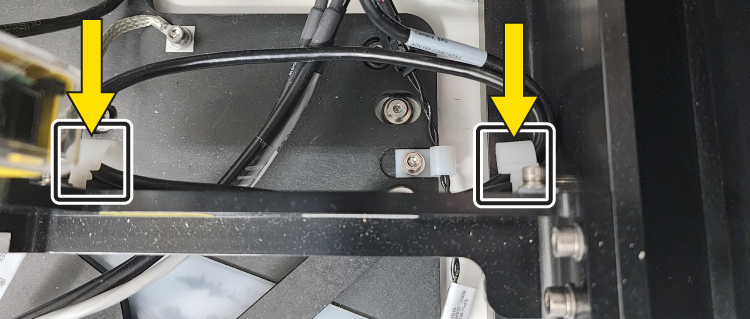
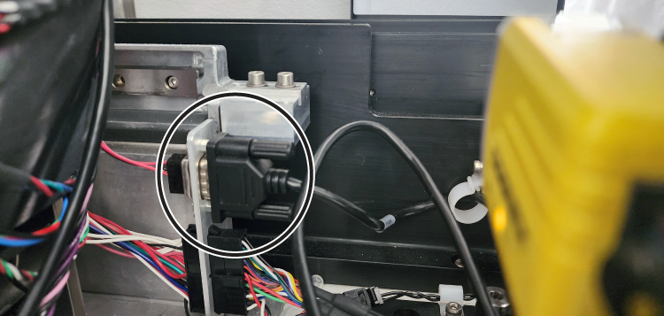
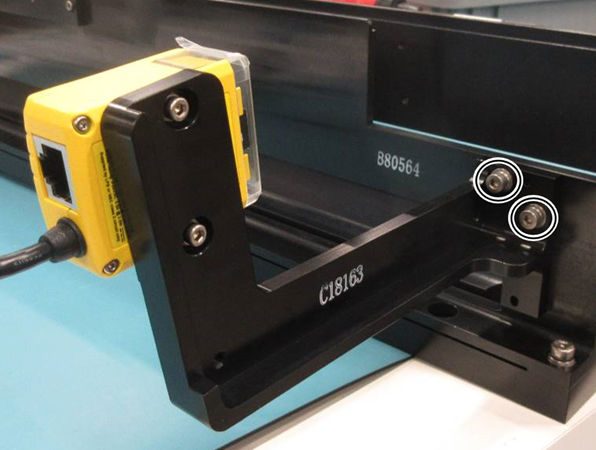

This topic is about how to replace the sample presentation unit (SPU) camera.
Safety Reminder
Servicing the DxI 9000 instrument involves potential risks for pinch and puncture, electrical shock, and exposure to hazardous materials. You must mitigate these risks by taking appropriate countermeasures. See
Safety for more information.
Tools
To replace the camera, you will need the following tools:
M2.5 hex screwdriver
M3 hex screwdriver
To replace the sample presentation unit (SPU) camera:
Figure 396: Locations of Doors, Drawers, and Covers on the Instrument
1
RV cover
2
Center cover
3
Substrate door
4
Reagent cover
5
Storage compartment
6
Sample handler input area cover
7
Wash buffer drawer
8
Waste drawer
9
Sample handler output area
10
Tip tray waste drawer
11
Tip feeder cover
Grab the lock handle on the underside of the sample presentation unit (SPU) and swing it open.
Figure 397: Opening the Sample Presentation Unit (SPU)
Find the sample presentation unit camera.
Figure 398: Camera in SPU
1
Camera
Figure 399: SPU camera
Disconnect the Ethernet cable from the camera.

Remove the camera's Serial cable from the two J-clips on the mount arm.

Unscrew the Serial connector screws to disconnect the Serial cable.

Use the M4 hex screwdriver to remove the two screws that attach the mount arm to the SPU.

Remove all film from the clear plastic on the new camera.
Be sure the lens on the new camera faces the silver background reflector and use the M4 hex screwdriver and the two screws to attach the new SPU camera and mount arm assembly to the SPU.
Note: Do not adjust the position of the SPU camera on the mount arm. The SPU camera arrives pre-aligned from the vendor.
Screw in the Serial connector screws to connect the Serial cable for the new camera.